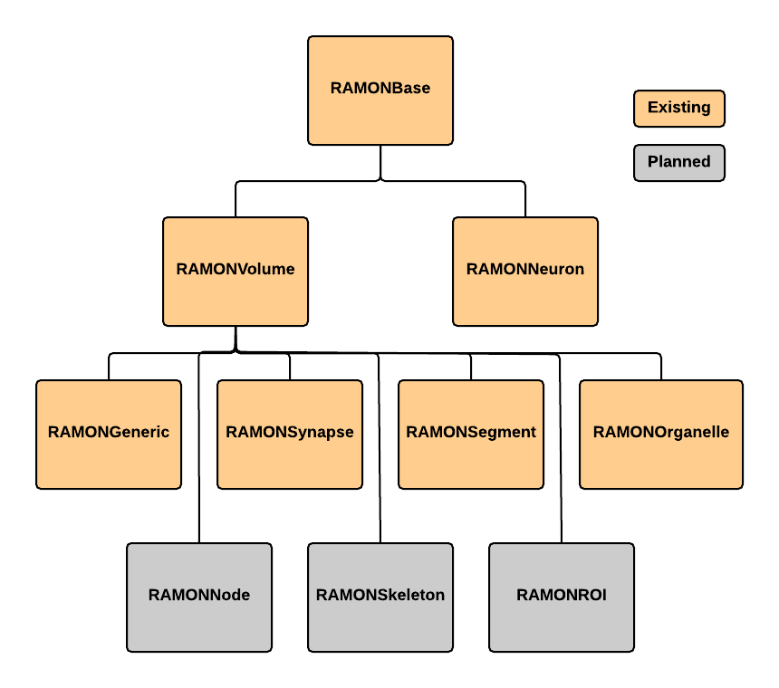

RAMON Data Standard¶
Overview¶
RAMON An acknowledged challenge in the connectomics field is annotation representation and its impact on software and institution-level interoperability.
As the field grows and data volumes increase, the sharing of data through remote and programmatic interfaces and the application of community developed algorithms and software will become common. Answering this challenge requires scene parsing, rather than simply segmentation; the rich semantic annotations are critical to inferring graph structure and understanding the function and structure of neuronal circuits. We developed a standard for annotation metadata, which we call the Reusable Annotation Markup for Open Neuroscience (RAMON).
RAMON defines a minimum set of annotation types and associated metadata that capture important biological information and build the relationships between annotations that are critical for connectome generation and neuroscience exploration. Annotation metadata is trivially extensible through custom, user defined key-value pairs. Thisis not a formal ontology; rather it facilitates the development of software and tools by providing a flexible, yet reliable, standard for representing annotation data. For example, our synapse annotation type has fields such as weight, type, confidence, associated neural segments, and is extensible with arbitrary, searchable key-value pairs.
RAMON types¶
There are currently 9 RAMON types:
RAMONBase¶
- Superclass to all RAMON data types
- Contains common information to all annotations
Properties¶
- id – Unique 32 bit value assigned by the OCP database on upload (can be set manually as well if you’d like to “force” an id value)
- confidence – value 0-1 indicating an estimated confidence in an annotation
- dynamicMetadata – a flexible key-value pair store
- status – an integer value used to indicate some sort of status (enumeration provided and can be extended)
- author – string indicating who created the annotation
RAMONNeuron¶
RAMONVolume¶
RAMONGeneric¶
RAMONSynapse¶
RAMONSegment¶
RAMONOrganelle¶
RAMONROI¶
RAMONNode¶
RAMONSkeleton¶
RAMON Inheritance Diagram¶
A visual depiction of the inheritance between the different RAMON types can be seen in the picture below.
